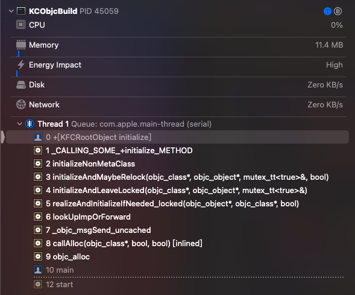
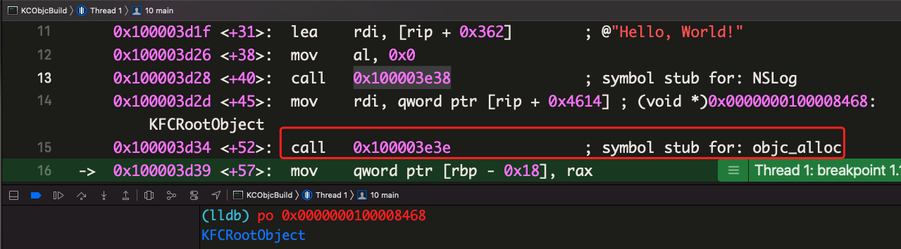
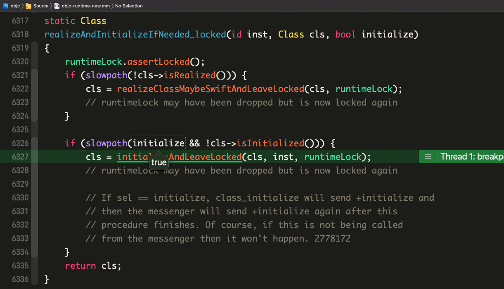
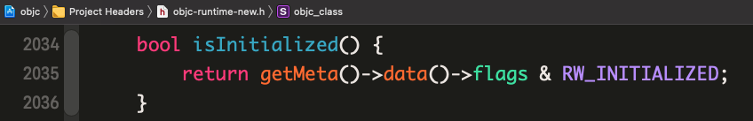
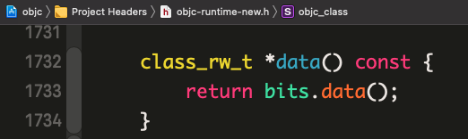
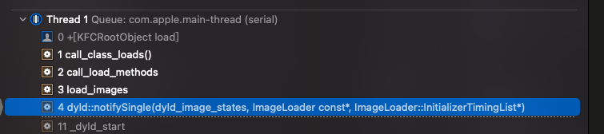
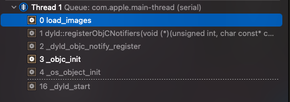

OC runtime 中的 load 和 initialize
我们的程序编译成二进制后，在启动时需要初始化运行环境，包括类环境的初始化，涉及到类相关方法的加载，其中很重要的两个方法有
+load和+initialize，这两个方法都会在初始化的时候被调用，相信大家都不陌生，但是涉及到底层细节时可能就不太熟悉了，比如它们是如何被调用的？为什么会是这样的调用？它们在写业务代码时能用来做什么？本文将通过runtime和dyld源码来回答这些问题
官方文档
遇事不决，官方文档！网上的博客以讹传讹的信息太多，最可靠的资料来源还是得看官方文档。
根据文档上的描述，+load 是在 class 或 Category 被添加到 runtime 时调用的，而 +initialize 是在类第一次收到消息时被调用。继续看详情，我们能得到以下印象：
+load- 静态库或动态库中的 load 方法都会被调用，前提是它们实现了 load 方法
- 在继承链上依次按照本类、子类、孙子类的顺序调用
- 本类上的 load 方法会先于所有分类上的 load 方法调用
+initialize+initialize方法会在调用第一次该类的方法之前被调用+initialize的调用阻塞式的，在+initialize方法执行完毕之前，该类的其他任何方法调用都会被阻断（block）- 在继承链上依次按照子类、孙子类的顺序调用
- 当继承链上某个类没有
+initialize的实现，那么其父类的+initialize可能会被多次执行 +initialize在每个类上只会被调用一次
调用时机
基于 objc4-818.2 可调试源码[1]创建一个四世同堂工程，添加符号断点 +[KFCRootObject initialize] [2]，选中Scheme: KCObjcBuild，KCObjcBuild target 的 main.m 文件中的 main 函数代码为：
1 | |
运行后[3]方法调用栈：

下面按照入栈顺序分析
initialize
main
0x0000000100008468是指向类对象的指针，调用alloc时，首先被转换成对objc_alloc的调用objc_alloc->callAlloc(objc_class*, bool, bool) [inlined]在
objc_alloc和callAlloc(objc_class*, bool, bool) [inlined]中，对形参、调用环境做了一番校验后，最终调用了((id(*)(id, SEL))objc_msgSend)(cls, @selector(alloc));，接着进入objc_msgSend的汇编实现_objc_msgSend_uncached->lookUpImpOrForward->realizeAndInitializeIfNeeded_locked(objc_object*, objc_class*, bool)- 当
@selector(alloc)对应的 IMP 在方法缓存中不存在时，会调用MethodTableLookup继续查找，这部分的汇编代码又将流程导向lookUpImpOrForward，后者预期返回该 IMP。 lookUpImpOrForward中调用realizeAndInitializeIfNeeded_locked(inst, cls, behavior & LOOKUP_INITIALIZE)时，behavior形参值为0x1011，包含标记位LOOKUP_INITIALIZE，即形参initialize为 true
(slowpath(initialize && !cls->isInitialized()))判断当前类是否被初始化过，slowpath(x)宏定义标记暗示编译器的优化方向，表明x较大概率为false，重点看看!cls->isInitialized()：- 从字面意思可以看出当前类是否被初始化的信息保存在元类的
class_rw_t结构的flags标记位中，由于#define RW_INITIALIZED (1<<29)，所以是否被初始化的信息保存在flags的右起第 29 位中
- 当
initializeAndLeaveLocked(objc_class*, objc_object*, mutex_tt<true>&)->initializeAndMaybeRelock(objc_class*, objc_object*, mutex_tt<true>&, bool)->initializeNonMetaClassinitializeNonMetaClass中:如果发现父类没有调用过初始化方法，将递归调用父类的初始化方法：
1
2
3
4supercls = cls->getSuperclass();
if (supercls && !supercls->isInitialized()) {
initializeNonMetaClass(supercls);
}通过加锁来设置
CLS_INITIALIZING1
2
3
4
5
6
7
8monitor_locker_t lock(classInitLock);
if (!cls->isInitialized() && !cls->isInitializing()) {
cls->setInitializing();
reallyInitialize = YES;
// Grab a copy of the will-initialize funcs with the lock held.
localWillInitializeFuncs.initFrom(willInitializeFuncs);
}1
2
3
4void setInitializing() {
ASSERT(!isMetaClass());
ISA()->setInfo(RW_INITIALIZING);
}接下来标记当前类被当前所在线程独占（当被某一线程独占时，只能在当前线程向类发送消息，其他线程在独占结束之前只能等待），然后向当前类发送
+initialize消息1
_setThisThreadIsInitializingClass(cls);1
2
3
4
5
6
7
8void callInitialize(Class cls)
{
// 通过 objc_msgSend 走消息转发流程。
// 意味着子类没有对应的方法实现时
// 会沿着继承链去尝试调用父类上的 initialize 方法
((void(*)(Class, SEL))objc_msgSend)(cls, @selector(initialize));
asm("");
}完成初始化：
1
2
3
4
5
6
7
8
9
10static void lockAndFinishInitializing(Class cls, Class supercls)
{
monitor_locker_t lock(classInitLock);
if (!supercls || supercls->isInitialized()) {
_finishInitializing(cls, supercls);
} else {
// 如果父类未被初始化，会在父类初始化完成后再修改当前 cls 初始化状态标记位
_finishInitializingAfter(cls, supercls);
}
}数据结构
PendingInitializeMap:1
2
3
4
5
6
7
8
9typedef struct PendingInitialize {
Class subclass;
struct PendingInitialize *next;
PendingInitialize(Class cls) : subclass(cls), next(nullptr) { }
} PendingInitialize;
typedef objc::DenseMap<Class, PendingInitialize *> PendingInitializeMap;
static PendingInitializeMap *pendingInitializeMap;pendingInitializeMap是一个全局的字典结构，它负责维护+initialize调用的依赖，会在两个地方访问：父类未完成初始化时。父类的初始化会优先于当前类，这一设定是通过
_finishInitializingAfter中如下的关键代码保证的：1
2
3
4
5
6
7PendingInitialize *pending = new PendingInitialize{cls};
auto result = pendingInitializeMap->try_emplace(supercls, \
pending);
if (!result.second) {
pending->next = result.first->second;
result.first->second = pending;
}父类已经初始化完成时，调用
_finishInitializing：1
2
3
4
5
6
7
8
9
10
11
12
13
14
15
16
17
18
19
20
21
22
23
24
25
26
27
28
29
30
31
32
33
34
35
36
37
38
39static void _finishInitializing(Class cls, Class supercls)
{
PendingInitialize *pending;
classInitLock.assertLocked();
ASSERT(!supercls || supercls->isInitialized());
if (PrintInitializing) {
_objc_inform("INITIALIZE: thread %p: %s is \
fully +initialized",
objc_thread_self(), cls->nameForLogging());
}
// mark this class as fully +initialized
cls->setInitialized();
classInitLock.notifyAll();
_setThisThreadIsNotInitializingClass(cls);
if (!pendingInitializeMap) return;
auto it = pendingInitializeMap->find(cls);
if (it == pendingInitializeMap->end()) return;
pending = it->second;
pendingInitializeMap->erase(it);
if (pendingInitializeMap->size() == 0) {
delete pendingInitializeMap;
pendingInitializeMap = nil;
}
while (pending) {
PendingInitialize *next = pending->next;
if (pending->subclass)
_finishInitializing(pending->subclass, cls);
delete pending;
pending = next;
}
}在
_finishInitializing函数中，设置RW_INITIALIZED标记并清除之前设置的RW_INITIALIZING，设置当前类不再被当前线程独占，然后递归地将先前被阻塞的子类设置为初始化完成状态，由于初始化工作已完成，这里还清理了不再需要的内存占用
在类初始化未完成之前（
RW_INITIALIZING），后续在该线程上其他的+initialize调用都会被直接return；在类已经完成初始化时（RW_INITIALIZED）直接return，官方的注释也很详细：查看官方注释
1
2
3
4
5
6
7
8
9
10
11
12
13
14
15
16
17
18
19
20
21
22
23
24
25
26
27
28
29
30
31if (...) {...}
else if (cls->isInitializing()) {
// We couldn't set INITIALIZING because INITIALIZING was already set.
// If this thread set it earlier, continue normally.
// If some other thread set it, block until initialize is done.
// It's ok if INITIALIZING changes to INITIALIZED while we're here,
// because we safely check for INITIALIZED inside the lock
// before blocking.
if (_thisThreadIsInitializingClass(cls)) {
return;
} else if (!MultithreadedForkChild) {
waitForInitializeToComplete(cls);
return;
} else {
// We're on the child side of fork(), facing a class that
// was initializing by some other thread when fork() was called.
_setThisThreadIsInitializingClass(cls);
performForkChildInitialize(cls, supercls);
}
}
else if (cls->isInitialized()) {
// Set CLS_INITIALIZING failed because someone else already
// initialized the class. Continue normally.
// NOTE this check must come AFTER the ISINITIALIZING case.
// Otherwise: Another thread is initializing this class. ISINITIALIZED
// is false. Skip this clause. Then the other thread finishes
// initialization and sets INITIALIZING=no and INITIALIZED=yes.
// Skip the ISINITIALIZING clause. Die horribly.
return;
}
- 到这里已经梳理完了类的
+initialize调用流程，验证了苹果 API 文档中关于+initialize的特性
load
load方法相信都不陌生，用得最多的场景就是方法交换，而且大家也都知道load方法会先于main函数调用。接下来将对照源码来理解load方法具体的调用过程。
还是刚刚的四世同堂工程，添加符号断点 +[KFCRootObject load]，运行后的调用栈为：

还是按照入栈顺序分析：
_dyld_start->dyld::notifySingle(dyld_image_states, ImageLoader const*, ImageLoader::InitializerTimingList*)->load_images，前两个栈记录是操作系统通过dyld加载程序时，dyld的内部函数调用过程，dyld负责给程序创建一个和操作系统绑定的运行环境，包括链接程序所用到的动态库（包括系统动态库）、绑定外部调用符号、rebase 基址，做完了环境准备工作后，通过load_images回调 runtime。我们增加一个符号断点：load_images，重新 run 起来：
定位到
_objc_init的源码：1
2
3
4
5
6
7
8
9
10
11
12
13
14
15
16
17
18
19
20
21
22
23void _objc_init(void)
{
static bool initialized = false;
if (initialized) return;
initialized = true;
// fixme defer initialization until an objc-using image is found?
environ_init();
tls_init();
static_init();
runtime_init();
exception_init();
#if __OBJC2__
cache_t::init();
#endif
_imp_implementationWithBlock_init();
_dyld_objc_notify_register(&map_images, load_images, unmap_image);
#if __OBJC2__
didCallDyldNotifyRegister = true;
#endif
}链接库被初始化之前
libSystem调用_objc_init进行初始化，在_objc_init中又通过_dyld_objc_notify_register注册了dyld的回调，在dyld源码[4] 中可以查看到_dyld_objc_notify_register的原型：1
2
3void _dyld_objc_notify_register(_dyld_objc_notify_mapped mapped,
_dyld_objc_notify_init init,
_dyld_objc_notify_unmapped unmapped);通过注释可知，当某个镜像将被
dyld初始化时，dyld会通过init这个函数指针形参将该镜像信息回调给 objc runtime。来看看load_images:1
2
3
4
5
6
7
8
9
10
11
12
13
14
15
16
17
18
19
20
21void load_images(const char *path __unused, const struct mach_header *mh)
{
if (!didInitialAttachCategories && didCallDyldNotifyRegister) {
didInitialAttachCategories = true;
loadAllCategories();
}
// Return without taking locks if there are no +load methods here.
if (!hasLoadMethods((const headerType *)mh)) return;
recursive_mutex_locker_t lock(loadMethodLock);
// Discover load methods
{
mutex_locker_t lock2(runtimeLock);
prepare_load_methods((const headerType *)mh);
}
// Call +load methods (without runtimeLock - re-entrant)
call_load_methods();
}- 遍历所有链接进来的 Image 头信息链表，找到所有的 Category 方法，并附加到对应的类的方法列表上
- 通过查询 Image 的 Mach-O 结构，在
__DATA,__objc_nlclslist和__DATA,__objc_nlcatlist中分别检查是否存在包含+load方法的类和包含+load方法的分类， 如果没有，跳过load_images接下来的步骤 - 准备 load 方法。先通过
_getObjc2NonlazyClassList获取到所有包含+load的类（话说这里分别进行了两次重复的 Mach-O 结构的查找，也许可以合并为一次🤔），然后将这些类添加到loadable_classes数组中。如果某个类有父类，父类的 load 方法（如果有）将会先添加到loadable_classes里面，这是通过schedule_class_load的递归调用保证的。接下来对包含+load的分类进行类似的操作，将结果保存在loadable_categories数组中。 - 调用
call_load_methods，执行 +load 方法。call_load_methods可能会触发其他镜像的映射(mapping)，其他的镜像映射时可能会有它自己的+load调用过程，所以call_load_methods可能会发生 Re-entrant。当 Re-entrant 发生时啥也不用做，因为按照我们刚刚的分析，其他镜像加载时执行到call_load_methods时，所包含+load方法的类和分类已经被添加到了全局的loadable_classes和loadable_categories中。 - 先开启一个
autoreleasepool，接下来会先在一个循环中不断调用先前找到的类的+load方法，且保证在一个镜像中，本类的+load总是比分类的+load先调用 call_class_loads方法，涉及到一个比较有意思的任务控制。先前我们知道loadable_classes数组保存的是struct loadable_class结构体，它指向通过realloc申请到的内存，在call_class_loads中首先用一个临时指针指向该内存区间，然后重置loadable_classes相关的全局变量，后续如果其他的 Image 被加载导致add_class_to_loadable_list被调用时loadable_classes数组会指向重新申请的内存空间，+load方法会被继续添加到这个数组里面，视call_class_loads消耗的速度，loadable_classes可能是重新申请内存(loadable_classes == NULL时)，也可能是在原有内存区域扩大空间，这些堆空间最终都会在call_class_loads中被free。回到call_class_loads函数，它顺序遍历上述临时指针指向的数组，取出load_method_t进行+load调用（注意是通过函数地址直接调用，没有走objc_msgSend流程），由于该数组中父类的+load在前面，所以父类的+load方法会被先调用- 对分类的
+load方法收集和本类的差不多，但是当分类的 Image 在本类的 Image 之前被加载运行时，存在额外的处理流程，所以分类的+load调用逻辑会有所不同。先遍历loadable_categories，如果类被首次加载过（Realized）就调用其+load方法，然后将该分类的从数组中移除，同时会将 Re-entrant 过程新增加的分类整理到一起，最后如果loadable_categories_used不为 0，返回true，以便在call_load_methods中能够通过循环继续处理本次未处理完毕的分类+load方法
总结
我们通过源码分析 +load 和 +initialize 的调用时机以及它们各自的调用特点，总结如下：
+load- 类的
+load方法一定会被调用，而且是在+main函数之前被调用 - 父类的
+load方法一定会先于子类的+load方法调用，而且在子类的+load中不需要添加[super load]; - 类的
+load方法会先于分类的+load方法调用 - 由于动态链接库先于主程序二进制加载，所以动态链接库里面的
+load方法会先于主程序的+load方法调用
- 类的
+initialize+initialize会在类首次收到消息之前调用- 父类的
+initialize会优先于子类的+initialize调用 - runtime 会自动处理对继承链上的
+initialize调用，所以重写时无需调用[super initialize]; - 相对于
+load，+initialize是普通方法，可以被交换；在多个分类中被实现时只会调用 Complie Sources 列表中最靠后的分类中的那个
- https://github.com/LGCooci/objc4_debug/tree/master/objc4-818.2 ↩
- 尝试过在
KFCRootObject.m的+ (void)initialize处添加断点，但运行时没有进来🤔，知道原因的大佬烦请留言赐教 ↩ - x86_64 架构运行 ↩
- 找到对应版本的
dyld源码：输入lldb命令：image list dyld，得到dyld所在路径为：/usr/lib/dyld，使用 MachOView 打开，在 LoadCommand 的 LC_SOURCE_VERSION 中找到源码 Version ，我这里是832.7.1↩
本博客所有文章除特别声明外，均采用 CC BY-SA 4.0 协议 ，转载请注明出处！